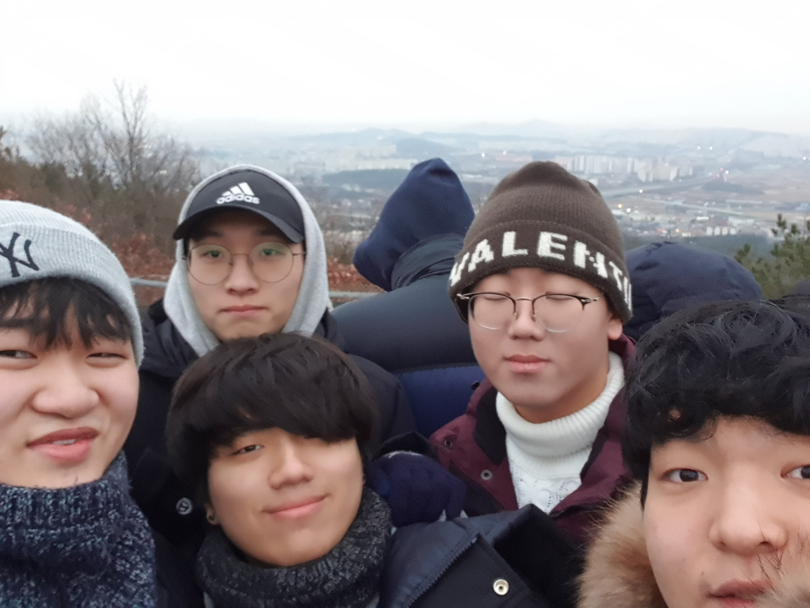
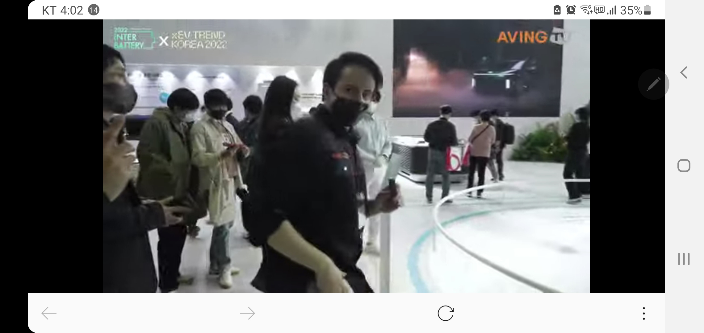

개노답(9)/"gaenodab(9)"
2020년 1월 1일 칠보산에서 촬영된 개노답(9) 조직의 단체사진.
멤버가 모두 모인 완전체가 아님에도 우습다는 듯이 무려 칠보산 정상에 있는 군부대
내에 잠입해서 인증샷을 찍었다.
목차
- 개요
- 명칭유래
- 사건사고
- 멤버
- 소조직
- 여담
-
3.1 권순원
3.2 김남경
3.3 김병우
3.4 송진혁
3.5 염준호
3.6 이준희
3.7 이호준
3.8 지현도
3.9 한준서
-
4.1 그셋끼
4.2 전열
개요
명칭 유래
- 9명 모두 답이 없어서 붙여졌다는 설
- 한 멤버가 부르던 애칭인 '개노답'이 그대로 굳혀졌다는 설
사건사고
멤버
소조직
- 그셋끼(김남경, 김병우, 송진혁)
- 전열(권순원, 염준호, 한준서)
- 후열(김남경, 김병우, 송진혁, 이준희, 이호준, 지현도)
여담
경기도 화성시 봉담읍 등지에서 활동하는 명실상부 자타공인 최악의 범죄조직.
개노답(9)라는 이름으로 악명이 높으며 (9)는 구성멤버 9명을 의미한다.
5년이라는 오래된 역사를 가진 조직이므로 명칭의 유래에 대한 논쟁이 꾸준히 지속되어 왔다.
가장 일반적으로 채택되는 두 가지 유래가 있는데 다음과 같다.
-
현재까지 알려진 모든 유래들 중에서 가장 큰 설득력을 얻고 있는 설이다.
-
모든 멤버들이 조직을 '개노답'이라고 부르지 않는다는 점에서 설득력을 얻고 있는 설이다.
이 설이 사실이라면 '개노답'이라는 애칭을 만든 멤버가 있다는 것인데 그 인물을 특정할 수 없어서 일각에선 사실이 아니라는 반대 의견이 제시되고 있는 상황이다.
자세한 내용은 개노답(9)/사건사고 참고하십시오.
멤버들에 대한 자세한 정보는 가나다 순으로 정렬한 각 문서를 열람해 확인하십시오.
조직 개노답(9) 내에서 특정 멤버들이 모여서 만든 소조직에 대한 목록.
조직이 거대하다보니 각각 소조직끼리 모여서 친목을 다지기도 하는 모양이다.
차박이 세명으로 이루어진 소조직.
지나가는 자동차들에 대한 품평과 자동차 관련 주제로 수준높은
토론을 하는 것으로 유명하다.
자동차 관련 전시회에서 이 멤버들의 모습이 자주 포착되는데
2022년 03월 19일 코엑스에서 개최된 전기차 전시회 '이브이 트렌드 코리아(EV TREND KOREA) 2022'
에서 멤버 김병우와 송진혁이 촬영되는 사건이 발생했다.

사진이 화제가 되자 기자회견에서 김병우는 "이번 사건은 우리 개노답(9)가 유튜브 진출을
염두해두고 벌인 사건"이라며 "앞으로 골드버튼을 목표로 정진하겠으니 지켜봐달라"며 당부의 말을
전했다.
또한 같은 날 송진혁은 개인 sns에 "사진이 나간 이후로 대한민국 3대 기획사를 포함한 여러 곳에서
문의 전화가 끊이지 않는다"며 자제를 부탁했다.
아래 사진은 디스패치에서 조사한 해당 멤버들의 카카오톡 내용.

개노답(9) 조직이 출몰할 때 앞장서서 등장하는 세명으로 구성되 소조직.
다른 멤버들 보다 발이 빨라서 먼저 등장한다는 설과 멤버들이 많아서 일자로 걸으면 통행이
불편해서 전역과 후열을 나누었다는 설이 존재한다.
전열 멤버들을 제외한 나머지 멤버들로 구성된 소조직.